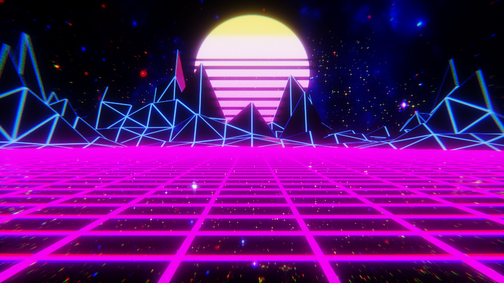

The Neo-Neon Renaissance
If you have ever driven down a highway at midnight while listening to thumping electronic basslines and soaring, retro synthesizers, you have experienced Synth-wave. Born in the mid-2000s out of a deep nostalgia for 1980s pop culture, action movies, and video games, this genre has exploded from an underground internet subculture into a major mainstream aesthetic.
Synth-wave doesn't just replicate the 80s; it romanticizes them. It blends the cinematic scope of classic movie soundtracks with modern electronic production, creating a soundscape that feels both futuristic and ancient. Driven by a visual style of neon purples, grid lines, and sports cars driving into a wireframe sunset, it is the ultimate "mood" genre for a digital age.

It is the perfect bridge between modern electronic music and 80s history, proving that great sounds never truly die. Synth-wave has transcended its niche origins to influence mainstream pop, film scores, and video game soundtracks, cementing its place as one of the most visually and sonically distinct genres of the 21st century.
"Nightcall" by Kavinsky — The song that defined the genre's aesthetic. Featured in the opening credits of Drive (2011), this track became the anthem of synth-wave and introduced millions to the genre's signature blend of darkness and nostalgia.
The pioneers and icons shaping the synth-wave sound